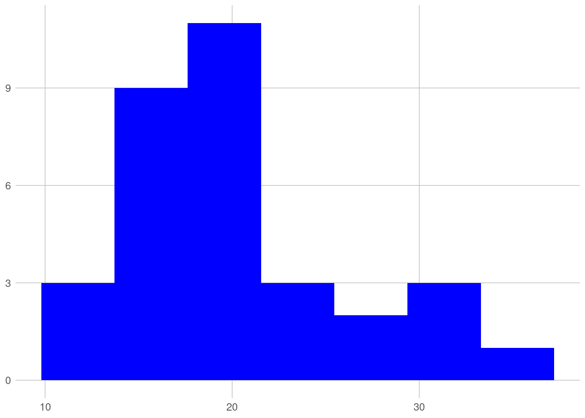
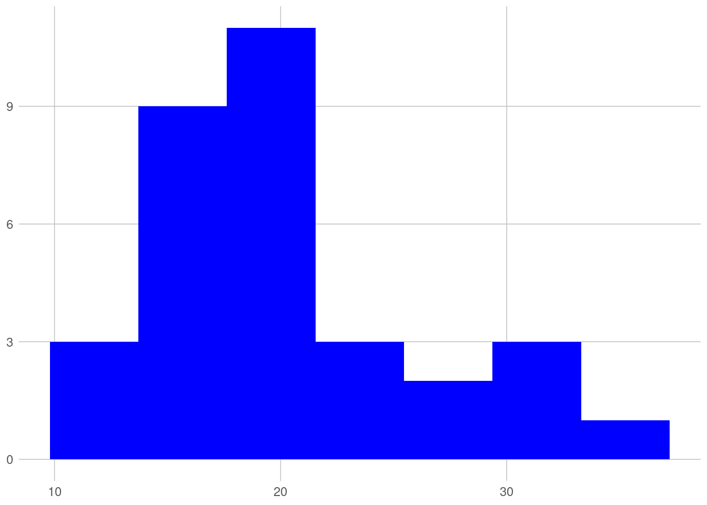

Código
```{r}
library(ggplot2)
library(ggthemes)
ggplot(mtcars) +
geom_histogram(aes(mpg), bins = 7, fill = "blue") +
theme_excel_new()
```
Um parágrafo antes de tudo.
Tincidunt ornare massa eget egestas purus. Mauris vitae ultricies leo integer malesuada nunc. Sed vulputate mi sit amet mauris. Blandit aliquam etiam erat velit. Viverra adipiscing at in tellus integer feugiat. Egestas tellus rutrum tellus pellentesque eu tincidunt tortor aliquam nulla. Turpis tincidunt id aliquet risus feugiat in ante. Eget velit aliquet sagittis id consectetur purus ut faucibus. Vestibulum mattis ullamcorper velit sed ullamcorper. Aliquam sem fringilla ut morbi tincidunt augue interdum. Tempor orci dapibus ultrices in iaculis nunc sed augue lacus. Vel facilisis volutpat est velit egestas dui id ornare arcu. Viverra nibh cras pulvinar mattis nunc sed blandit libero. Volutpat sed cras ornare arcu dui vivamus arcu felis bibendum. Quam id leo in vitae turpis massa sed elementum. In vitae turpis massa sed elementum tempus egestas sed.
```{r}
library(ggplot2)
library(ggthemes)
ggplot(mtcars) +
geom_histogram(aes(mpg), bins = 7, fill = "blue") +
theme_excel_new()
```
Uma citação Wickham (2019).

© 2023 Fulano de Tal
🖤 by Fulnao de Tal